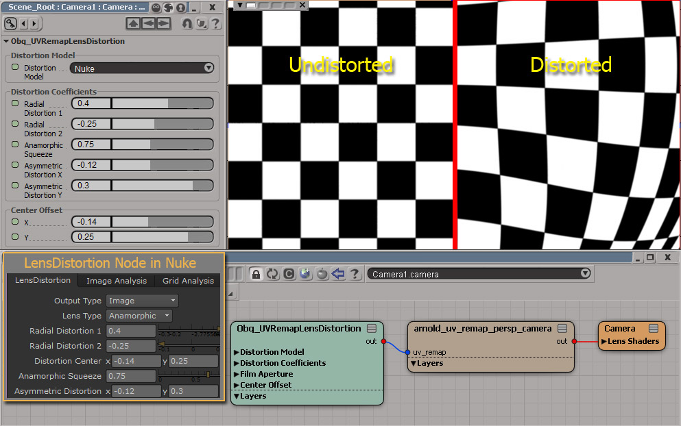

|
|
|
|
|
|
|
Obq_UVRemapLensDistortion |
|
|
| Description
| Installation
| Render Tree Usage
| Copyrights
|
Category:
Texture
Shader
Family: Texture
Output:
Color
Obq_UVRemapLensDistortion is used as the "uv_remap"
texture input of the "arnold_uv_remap_persp_camera" lens shader,
instead of a generated distortion map. The 3DEqualizer
distortion models are calculated using slightly modified headers
of Science-D-Visions LDPK therefore, you don't need the actual
library.
|
|
|
Distortion
Model |
|
|
| Distortion Model |
The
model used for distortion :
- Nuke
- 3DE Classic LD Model
- 3DE4 Anamorphic, Degree 6
- 3DE4 Radial - Fisheye, Degree 8
- 3DE4 Radial - Standard, Degree 4
|
|
|
|
|
Distortion Coefficients |
|
|
| Parameters |
Parameters
for the various distortion models.
Note : No
details are provided because there are too many. See Nuke's help
or Science-D-Visions' LDPK for more info.
|
|
|
|
|
Film Aperture |
|
|
| X |
The
width of the sensor.
Note : These
parameters only affect the center offsets, so you have to keep the same
units.
|
|
| Y |
The
height of the sensor. |
|
| Pixel Ratio |
The
Pixel Aspect Ratio is not used even if it is exposed. Since the
absolute offset will be transform into relative offset for 3DE models,
this parameter has no importance. The offset and filmback uses the same
pixel ratio leading to a simplification of the equations. |
|
|
|
|
Center Offset |
|
|
| X |
The
x offset.
Note :
Nuke's distortion model uses relatives values, while 3DEqualizer uses
absolute distances and filmback size. |
|
| Y |
The
y offset.
|
|
|
|
|
Installation |
|
|
- Copy the Obq_UVRemapLensDistortion.dll
in the proper
"SItoA\Application\bin\nt-x86-64"
folder and the Obq_UVRemapLensDistortion.spdl
in
the proper "SItoA\Application\spdl"
folder.
- You'll need to install Microsoft
Visual C++ 2010 redistributable package (x64) if not already
done.
|
|
|
|
|
Render
Tree Usage |
|
|
Obq_UVRemapLensDistortion is great because you
never have to generate a new distortion map if the parameters are
changed or if the resolution is changed. Just plug the color output
into the "uv_remap" port of the "arnold_uv_remap_persp_camera":
 |
|
|
|
|
Copyrights |
|
|
Copyright
(c) 2012
Marc-Antoine Desjardins, ObliqueFX (madesjardins@obliquefx.com)
LDPK (c) 2011
Science-D-Visions
Permission is hereby granted, free of charge, to any person obtaining a
copy
of this software and associated documentation files (the "Software"),
to deal
in the Software without restriction, including without limitation the
rights
to use, copy, modify, merge, publish, distribute, sublicense, and/or
sell
copies of the Software, and to permit persons to whom the Software is
furnished to do so, subject to the following conditions:
The above copyright notice and this permission notice shall be included
in all
copies or substantial portions of the Software.
THE SOFTWARE IS PROVIDED "AS IS", WITHOUT WARRANTY OF ANY KIND, EXPRESS
OR
IMPLIED, INCLUDING BUT NOT LIMITED TO THE WARRANTIES OF
MERCHANTABILITY,
FITNESS FOR A PARTICULAR PURPOSE AND NONINFRINGEMENT. IN NO EVENT SHALL
THE AUTHORS OR COPYRIGHT HOLDERS BE LIABLE FOR ANY CLAIM, DAMAGES OR
OTHER
LIABILITY, WHETHER IN AN ACTION OF CONTRACT, TORT OR OTHERWISE, ARISING
FROM,
OUT OF OR IN CONNECTION WITH THE SOFTWARE OR THE USE OR OTHER DEALINGS
IN THE
SOFTWARE.
Licensed under the MIT license: http://www.opensource.org/licenses/mit-license.php
|
|
|
|
|
|
|